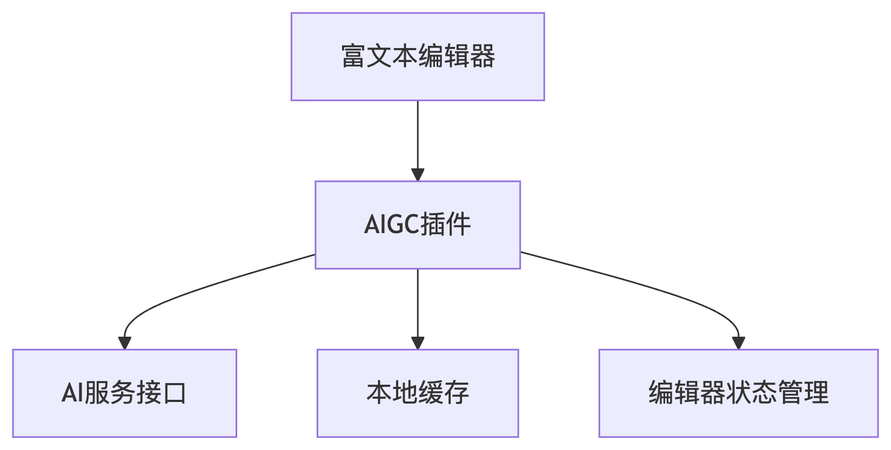

如何基于现有富文本编辑器（如 Slate、TipTap、Monaco）扩展支持 AIGC 插件？比如一键生成段落或续写？
参考答案
一、核心架构设计

二、编辑器实现方案
Slate.js 实现
// 注册AI命令扩展
const withAIGC = (editor: Editor) => {
const { insertText } = editor;
editor.aigenerate = async (type: 'paragraph' | 'continue') => {
const selection = editor.selection;
if (!selection) return;
// 获取上下文文本
const context = Editor.string(editor, Editor.above(editor)?.trim() || '';
// 调用AI服务
const aiResult = await fetchAICompletion({
prompt: type === 'continue' ? context : '',
mode: type
});
// 插入结果
Transforms.insertText(editor, aiResult, { at: selection });
};
return editor;
};
// 使用示例
<button onClick={() => ReactEditor.aigenerate(editor, 'paragraph')}>
生成段落
</button>三、关键技术实现
1. 上下文感知获取
// 获取光标前后各200字符作为上下文
function getEditorContext(editor) {
const { selection } = editor;
const range = {
anchor: { path: selection.anchor.path, offset: Math.max(0, selection.anchor.offset - 200) },
focus: { path: selection.focus.path, offset: selection.focus.offset + 200 }
};
return Editor.string(editor, range);
}2. 节流请求优化
const aiRequestQueue = new Map();
async function throttledAIRequest(key, prompt) {
if (aiRequestQueue.has(key)) {
return aiRequestQueue.get(key);
}
const promise = fetchAICompletion(prompt)
.finally(() => aiRequestQueue.delete(key));
aiRequestQueue.set(key, promise);
return promise;
}3. Markdown兼容处理
// 转换AI生成的Markdown为编辑器节点
function parseAIContent(content) {
const md = new Remarkable();
const tokens = md.parse(content, {});
return tokens.map(token => {
if (token.type === 'paragraph_open') {
return { type: 'paragraph', children: [] };
}
// ...其他转换规则
});
}四、用户体验优化
1. 渐进式加载动画
const [isGenerating, setIsGenerating] = useState(false);
const handleGenerate = async () => {
setIsGenerating(true);
try {
const result = await editor.aigenerate();
// 逐字插入效果
for (let i = 0; i < result.length; i++) {
await new Promise(r => setTimeout(r, 20));
Transforms.insertText(editor, result[i], { at: editor.selection });
}
} finally {
setIsGenerating(false);
}
};2. 多候选结果处理
// 显示候选结果浮层
function showAIOptions(editor, results) {
const popup = document.createElement('div');
popup.className = 'ai-options-popup';
results.forEach((text, i) => {
const option = document.createElement('div');
option.textContent = text.substr(0, 50);
option.onclick = () => {
Transforms.insertText(editor, text);
document.body.removeChild(popup);
};
popup.appendChild(option);
});
// 定位到光标下方
const [node, path] = Editor.node(editor, editor.selection);
const domNode = ReactEditor.toDOMNode(editor, node);
const rect = domNode.getBoundingClientRect();
popup.style.top = `${rect.bottom}px`;
popup.style.left = `${rect.left}px`;
document.body.appendChild(popup);
}3. 错误恢复机制
// 失败时保留草稿并重试
async function safeAIGenerate(editor, retries = 3) {
const originalText = Editor.string(editor, editor.selection);
try {
return await editor.aigenerate();
} catch (error) {
if (retries > 0) {
Transforms.insertText(editor, originalText);
return safeAIGenerate(editor, retries - 1);
}
throw error;
}
}五、生产环境注意事项
- API安全：
- 使用JWT签名请求
- 限制用户每分钟调用次数
``javascript<br> // 请求签名示例<br> const signRequest = (prompt) => {<br> const nonce = crypto.randomUUID();<br> const signature = crypto.createHmac('sha256', SECRET)<br> .update(${prompt}:${nonce})<br> .digest('hex');<br> return { prompt, nonce, signature };<br> };<br> ``
- 本地缓存：
``typescript<br> // 使用IndexedDB缓存常见请求<br> const cacheAIResponse = async (prompt, result) => {<br> const db = await openDB('ai-cache', 1);<br> await db.put('responses', { prompt, result, timestamp: Date.now() });<br> };<br> ``
- 性能监控：
``javascript<br> // 埋点记录生成耗时<br> const start = performance.now();<br> const result = await fetchAICompletion(prompt);<br> trackEvent('ai_generate', {<br> duration: performance.now() - start,<br> length: result.length<br> });<br> ``
- 编辑器集成：通过扩展各编辑器的命令系统实现无缝接入
- 上下文感知：智能获取光标周围文本作为AI提示
- 渐进式交互：流式插入结果增强用户体验
- 健壮性保障：错误重试和本地缓存机制
- 安全防护：请求签名和频率限制